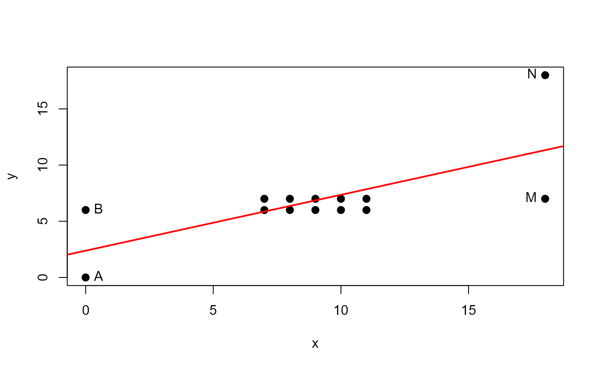
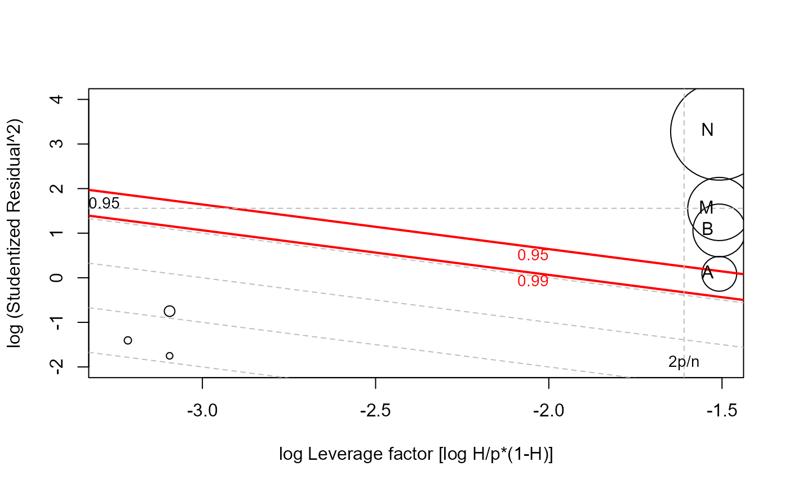
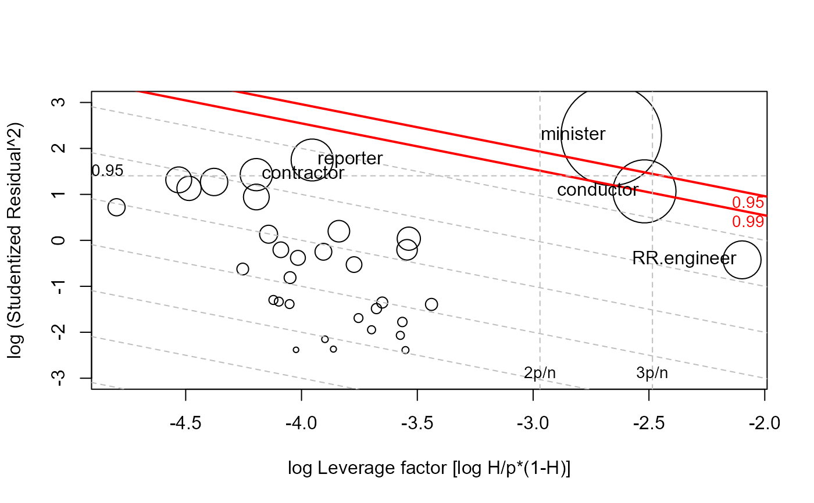

This function creates a “bubble” plot of functions, R = log(Studentized residuals^2) by L = log(H/p*(1-H)) of the hat values, with the areas of the circles representing the observations proportional to Cook's distances.
Usage
lrPlot(model, ...)
# S3 method for lm
lrPlot(
model,
scale = 12,
xlab = "log Leverage factor [log H/p*(1-H)]",
ylab = "log (Studentized Residual^2)",
xlim = NULL,
ylim,
labels,
id.method = "noteworthy",
id.n = if (id.method[1] == "identify") Inf else 0,
id.cex = 1,
id.col = palette()[1],
ref = c("h", "v", "d", "c"),
ref.col = "gray",
ref.lty = 2,
ref.lab = TRUE,
...
)Arguments
- model
a model object fit by
lm- ...
arguments to pass to the
plotandpointsfunctions.- scale
a factor to adjust the radii of the circles, in relation to
sqrt(CookD)- xlab, ylab
axis labels.
- xlim, ylim
Limits for x and y axes. In the space of (L, R) very small residuals typically extend the y axis enough to swamp the large residuals, so the default for
ylimis set to a range of 6 log units starting at the maximum value.- labels, id.method, id.n, id.cex, id.col
settings for labeling points; see
link{showLabels}for details. To omit point labeling, setid.n=0, the default. The defaultid.method="noteworthy"is used in this function to indicate setting labels for points with large Studentized residuals, hat-values or Cook's distances. See Details below. Setid.method="identify"for interactive point identification.- ref
Options to draw reference lines, any one or more of
c("h", "v", "d", "c")."h"and"v"draw horizontal and vertical reference lines at noteworthy values of R and L respectively."d"draws equally spaced diagonal reference lines for contours of equal CookD."c"draws diagonal reference lines corresponding to approximate 0.95 and 0.99 contours of CookD.- ref.col, ref.lty
Color and line type for reference lines. Reference lines for
"c" %in% refare handled separately.- ref.lab
A logical, indicating whether the reference lines should be labeled.
Value
If points are identified, returns a data frame with the hat values, Studentized residuals and Cook's distance of the identified points. If no points are identified, nothing is returned. This function is primarily used for its side-effect of drawing a plot.
Details
This plot, suggested by McCulloch & Meeter (1983) has the attractive property that contours of equal Cook's distance are diagonal lines with slope = -1. Various reference lines are drawn on the plot corresponding to twice and three times the average hat value, a “large” squared studentized residual and contours of Cook's distance.
The id.method="noteworthy" setting also requires setting
id.n>0 to have any effect. Using id.method="noteworthy", and
id.n>0, the number of points labeled is the union of the largest
id.n values on each of L, R, and CookD.
References
A. J. Lawrence (1995). Deletion Influence and Masking in Regression Journal of the Royal Statistical Society. Series B (Methodological) , Vol. 57, No. 1, pp. 181-189.
McCulloch, C. E. & Meeter, D. (1983). Discussion of "Outliers..." by R. J. Beckman and R. D. Cook. Technometrics, 25, 152-155.
See also
influencePlot.mlm
influencePlot in the car package for other methods
Examples
# artificial example from Lawrence (1995)
x <- c( 0, 0, 7, 7, 8, 8, 9, 9, 10, 10, 11, 11, 18, 18 )
y <- c( 0, 6, 6, 7, 6, 7, 6, 7, 6, 7, 6, 7, 7, 18 )
DF <- data.frame(x,y, row.names=LETTERS[1:length(x)])
DF
#> x y
#> A 0 0
#> B 0 6
#> C 7 6
#> D 7 7
#> E 8 6
#> F 8 7
#> G 9 6
#> H 9 7
#> I 10 6
#> J 10 7
#> K 11 6
#> L 11 7
#> M 18 7
#> N 18 18
with(DF, {
plot(x,y, pch=16, cex=1.3)
abline(lm(y~x), col="red", lwd=2)
NB <- c(1,2,13,14)
text(x[NB],y[NB], LETTERS[NB], pos=c(4,4,2,2))
}
)

mod <- lm(y~x, data=DF)
# standard influence plot from car
influencePlot(mod, id.n=4)
#> Warning: "id.n" is not a graphical parameter
#> Warning: "id.n" is not a graphical parameter
#> Warning: "id.n" is not a graphical parameter
#> Warning: "id.n" is not a graphical parameter
#> Warning: "id.n" is not a graphical parameter
#> Warning: "id.n" is not a graphical parameter
#> Warning: "id.n" is not a graphical parameter
#> StudRes Hat CookD
#> M -2.162660 0.3068937 0.7925928
#> N 5.156882 0.3068937 1.8793244
# lrPlot version
lrPlot(mod, id.n=4)

#> Note: 7 points less than R= -2 have been clipped to preserve resolution
#> Rstudent Hat CookD L R
#> A -1.045217 0.3068937 0.2400144 -1.507829 0.0884497
#> B 1.699917 0.3068937 0.5527151 -1.507829 1.0611588
#> M -2.162660 0.3068937 0.7925928 -1.507829 1.5426777
#> N 5.156882 0.3068937 1.8793244 -1.507829 3.2806642
library(car)
dmod <- lm(prestige ~ income + education, data = Duncan)
influencePlot(dmod, id.n=3)
#> Warning: "id.n" is not a graphical parameter
#> Warning: "id.n" is not a graphical parameter
#> Warning: "id.n" is not a graphical parameter
#> Warning: "id.n" is not a graphical parameter
#> Warning: "id.n" is not a graphical parameter
#> Warning: "id.n" is not a graphical parameter
#> Warning: "id.n" is not a graphical parameter
#> StudRes Hat CookD
#> minister 3.1345186 0.17305816 0.56637974
#> reporter -2.3970224 0.05439356 0.09898456
#> conductor -1.7040324 0.19454165 0.22364122
#> RR.engineer 0.8089221 0.26908963 0.08096807
lrPlot(dmod, id.n=3)

#> Note: 11 points less than R= -3 have been clipped to preserve resolution
#> Rstudent Hat CookD L R
#> minister 3.1345186 0.17305816 0.56637974 -2.662719 2.2849512
#> reporter -2.3970224 0.05439356 0.09898456 -3.954193 1.7484546
#> conductor -1.7040324 0.19454165 0.22364122 -2.519378 1.0659949
#> contractor 2.0438046 0.04325517 0.05852346 -4.195032 1.4296262
#> RR.engineer 0.8089221 0.26908963 0.08096807 -2.097859 -0.4241054